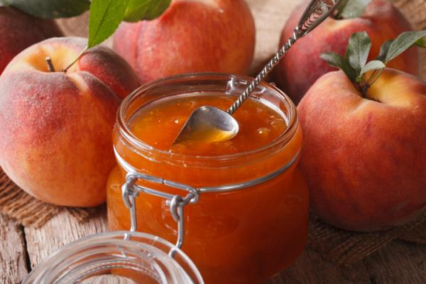

Peach jam
Ingredients

- 1 1/2k Of peaches.
- 1K Of sugar.
- 1 Cup of water.
- 1 Cinnamon slit.
Steps to follow
- Peel the peaches, remove the stones, cut them into quarters and place them in a layered container, alternating with sugar.
- Afterwards, let them marinate for 1 hour and cook on high heat for 10 minutes. Add water and cinnamon.
- Then continue cooking over low heat, stirring with a wooden spoon when it begins to thicken.
- When this thick, leave on fire for 10 minutes more and remove from heat. Let cool and serve.